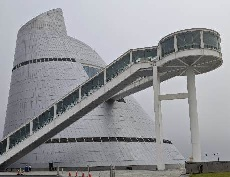

<!doctype html>
<html>
<head>
    <meta charset="utf-8">
    <meta http-equiv="X-UA-Compatible" content="IE=edge">
    <meta name="viewport" content="initial-scale=1.0, user-scalable=no, width=device-width">
    <title>基於高斯濺射與北斗衛星導航系統的新型全息地圖</title>
    <link rel="stylesheet" href="https://a.amap.com/jsapi_demos/static/demo-center/css/demo-center.css"/>
    <style>
        html, body, #container {
            height: 100%;
            width: 100%;
        }

        .content-window-card {
            position: relative;
            box-shadow: none;
            bottom: 0;
            left: 0;
            width: 450px;
            height: 100px;
            padding: 0;
        }

        .content-window-card p {
            height: 2rem;
        }

        .custom-info {
            border: solid 1px silver;
        }

        div.info-top {
            position: relative;
            background: none repeat scroll 0 0 #F9F9F9;
            border-bottom: 1px solid #CCC;
            border-radius: 5px 5px 0 0;
        }

        div.info-top div {
            display: inline-block;
            color: #333333;
            font-size: 14px;
            font-weight: bold;
            line-height: 31px;
            padding: 0 10px;
        }

        div.info-top img {
            position: absolute;
            top: 10px;
            right: 10px;
            transition-duration: 0.25s;
        }

        div.info-top img:hover {
            box-shadow: 0px 0px 5px #000;
        }

        div.info-middle {
            font-size: 12px;
            padding: 10px 6px;
            line-height: 20px;
        }

        div.info-bottom {
            height: 0px;
            width: 100%;
            clear: both;
            text-align: center;
        }

        div.info-bottom img {
            position: relative;
            z-index: 104;
        }

        span {
            margin-left: 5px;
            font-size: 11px;
        }

        .info-middle img {
            float: left;
            margin-right: 6px;
        }

        .info {
            width: 26rem;
        }
    </style>
</head>
<body>
<div id="container"></div>
<div class="info">
    <h4 id="status"></h4><hr>
    <p id="result"></p><hr>
</div>
<script type="text/javascript" src="https://webapi.amap.com/maps?v=1.4.15&key=e1f470c32fc2df3f783099676f76ff49"></script>
<script type="text/javascript">
    // Initialize the map
    var map = new AMap.Map("container", {
        resizeEnable: true,
        center: [113.541765, 22.186945], // Set the map center to these coordinates
        zoom: 16 // Set the zoom level
    });

    // Add geolocation functionality
    AMap.plugin('AMap.Geolocation', function() {
        var geolocation = new AMap.Geolocation({
            enableHighAccuracy: true, // 是否使用高精度定位，默认:true
            timeout: 10000, // 超过10秒后停止定位，默认：5s
            buttonPosition: 'RB', // 定位按钮的停靠位置
            buttonOffset: new AMap.Pixel(10, 20), // 定位按钮与设置的停靠位置的偏移量，默认：Pixel(10, 20)
            zoomToAccuracy: true // 定位成功后是否自动调整地图视野到定位点
        });
        map.addControl(geolocation);
        geolocation.getCurrentPosition(function(status, result) {
            if (status == 'complete') {
                onComplete(result);
            } else {
                onError(result);
            }
        });
    });

    // Parse geolocation results
    function onComplete(data) {
        document.getElementById('status').innerHTML = '定位成功';
        var str = [];
        str.push('定位结果：' + data.position);
        str.push('定位类别：' + data.location_type);
        if (data.accuracy) {
            str.push('精度：' + data.accuracy + ' 米');
        } // 如为IP精确定位结果则没有精度信息
        str.push('是否经过偏移：' + (data.isConverted ? '是' : '否'));
        document.getElementById('result').innerHTML = str.join('<br>');
    }

    // Parse geolocation error
    function onError(data) {
        document.getElementById('status').innerHTML = '定位失败';
        document.getElementById('result').innerHTML = '失败原因排查信息:' + data.message;
    }

    // Add markers to the map
    addMarker();
    addSecondMarker();

    // Add the first marker
    function addMarker() {
        var marker = new AMap.Marker({
            map: map,
            position: [113.541765, 22.186945] // Marker position
        });
        AMap.event.addListener(marker, 'click', function() {
            infoWindow.open(map, marker.getPosition());
        });
    }

    // Add the second marker
    function addSecondMarker() {
        var secondMarker = new AMap.Marker({
            map: map,
            position: [113.562085, 22.18336] // Set the position of the second marker
        });
        AMap.event.addListener(secondMarker, 'click', function() {
            secondInfoWindow.open(map, secondMarker.getPosition());
        });
    }

    // Create the first info window
    var title = '澳門慈幼中學<span style="font-size:11px;color:#F00;">學校</span>',
        content = [];
    content.push("Address: 澳門風順堂街十六號");
    content.push("Phone: (853) 2857 3033");
    content.push("<a href='http://100.124.27.9:7007'>More Info</a>");
    var infoWindow = new AMap.InfoWindow({
        isCustom: true,
        content: createInfoWindow(title, content.join("<br/>")),
        offset: new AMap.Pixel(16, -45)
    });

    // Create the second info window
    var secondTitle = '澳門科學館<span style="font-size:11px;color:#F00;">博物館</span>',
        secondContent = [];
    secondContent.push("Address: 澳門孫逸仙大馬路");
    secondContent.push("Phone: (853) 28880822");
    secondContent.push("<a href='http://100.124.27.9:7007'>More Info</a>");
    var secondInfoWindow = new AMap.InfoWindow({
        isCustom: true,
        content: createInfoWindow(secondTitle, secondContent.join("<br/>")),
        offset: new AMap.Pixel(16, -45)
    });

    // Build the custom info window
    function createInfoWindow(title, content) {
        var info = document.createElement("div");
        info.className = "custom-info input-card content-window-card";

        var top = document.createElement("div");
        var titleD = document.createElement("div");
        var closeX = document.createElement("img");
        top.className = "info-top";
        titleD.innerHTML = title;
        closeX.src = "https://webapi.amap.com/images/close2.gif";
        closeX.onclick = closeInfoWindow;

        top.appendChild(titleD);
        top.appendChild(closeX);
        info.appendChild(top);

        var middle = document.createElement("div");
        middle.className = "info-middle";
        middle.style.backgroundColor = 'white';
        middle.innerHTML = content;
        info.appendChild(middle);

        var bottom = document.createElement("div");
        bottom.className = "info-bottom";
        bottom.style.position = 'relative';
        bottom.style.top = '0px';
        bottom.style.margin = '0 auto';
        var sharp = document.createElement("img");
        sharp.src = "https://webapi.amap.com/images/sharp.png";
        bottom.appendChild(sharp);
        info.appendChild(bottom);
        return info;
    }

    // Close the info window
    function closeInfoWindow() {
        map.clearInfoWindow();
    }
</script>
</body>
</html>
